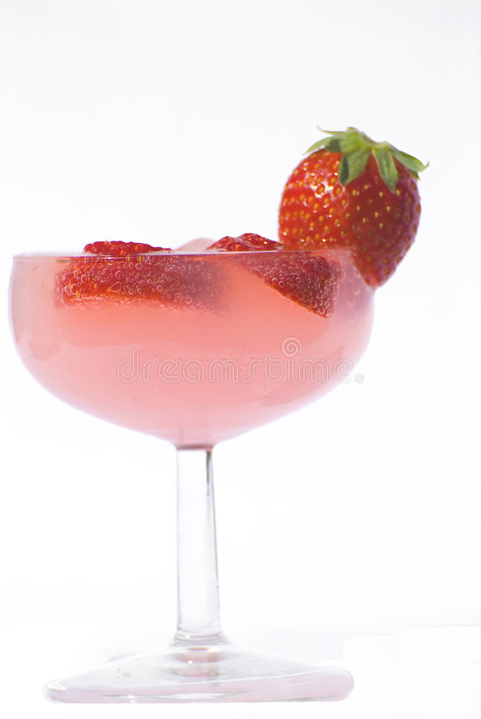

Strawberry Bellini

Ingredients
- 3 cups strawberries, hulled and sliced
- ¼ cup confectioners' sugar
- 1 tablespoon brandy
- 1 ½ cups chilled sparkling wine
- 3 large strawberries
Step for Prepration
- Blend 3 cups strawberries, confectioners' sugar, and brandy together in a blender until smooth. Chill in refrigerator for 10 minutes.
- Divide the strawberry mixture among 3 champagne flutes; top each with about 1/2 cup sparkling wine; stir. Garnish each glass with 1 strawberry.